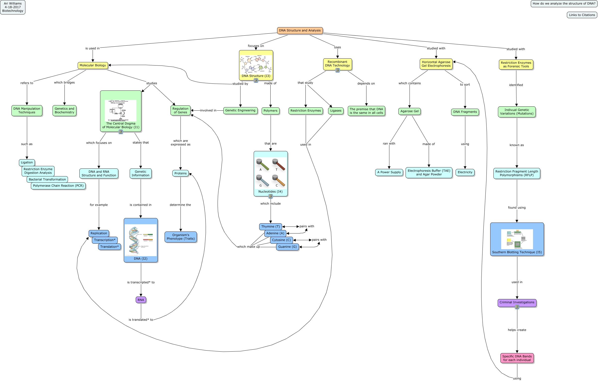

WARNING:
JavaScript is turned OFF. None of the links on this concept map will
work until it is reactivated.
If you need help turning JavaScript On, click here.
This Concept Map, created with IHMC CmapTools, has information related to: DNA, Recombinant DNA Technology that study Restriction Enzymes, Southern Blotting Technique (I5) used in Criminal Investigations, DNA Structure (I3) made of Polymers, DNA (I2) is transcripted* to RNA, Molecular Biology studies The Central Dogma of Molecular Biology (I1), Restriction Enzymes as Forensic Tools identified Indivual Genetic Variations (Mutations), Thymine (T) which make up Regulation of Genes, RNA is translated* to Proteins, DNA Structure and Analysis studied with Horizontal Agarose Gel Electrophoresis, Agarose Gel ran with A Power Supply, Proteins determine the Organism's Phenotype (Traits), Indivual Genetic Variations (Mutations) known as Restriction Fragment Length Polymorphisms (RFLP), Nucleotides (I4) which include Thymine (T), Molecular Biology refers to DNA Manipulation Techniques, DNA Structure (I3) studied by Molecular Biology, Recombinant DNA Technology depends on The premise that DNA is the same in all cells, Agarose Gel made of Electrophoresis Buffer (TAE) and Agar Powder, DNA Structure and Analysis is used in Molecular Biology, Genetic Engineering involved in Regulation of Genes, Horizontal Agarose Gel Electrophoresis which contains Agarose Gel
